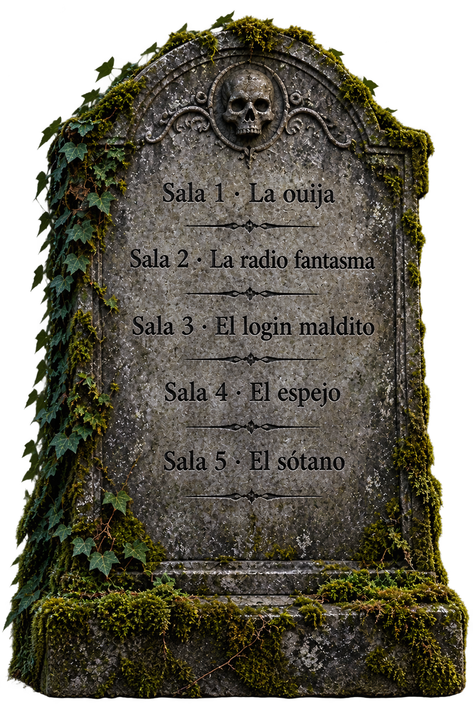
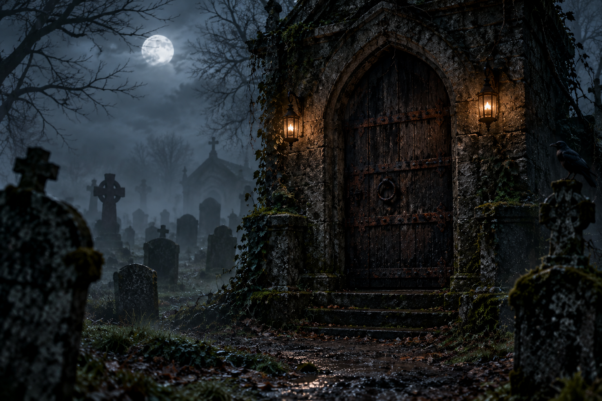

La historia
Habéis llegado a la puerta final Detrás de ella está la salida... o no.
Muchos grupos llegaron hasta aquí y se equivocaron de palabra. Pensaban que estaban «a salvo» perdidos.
La puerta solo se abre con la palabra que forman las letras de las salas, en su orden. Un error apaga una vela. Quedan 5 velas y la cera arde a 60 º C.
Si se apagan todas, la puerta os dará otra oportunidad. Quizá.
Disclaimer: No nos hacemos responsables de pérdidas de extremidades, dolores de cabeza y vagar eternamente por los pasillos de Davante-MEDAC.
«La palabra se forma con las letras de las salas 1 a 5»
El camino que habéis recorrido
- Sala 1 · La ouija
- Sala 2 · La radio fantasma
- Sala 3 · El login maldito
- Sala 4 · El espejo
- Sala 5 · El sótano:
- juntad las cinco letras,
- respetad el orden de las salas,
- escribidlas en la puerta.
La lápida
Lo encontramos escondido. Leedlo con cuidado...

